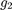
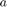

elements.
elements.This document will show some features of RepLAB.
Before trying any of the RepLAB commands, we must first add the paths:
replab_addpaths
RepLAB decomposes representations of permutation groups; this does not lose generality as all finite groups can be represented by permutation groups.
We construct the symmetric group acting on elements.
n = 4;
The symmetric group is generated by a cyclic permutation  :
:
g1 = [2:n 1];
and one transposition :
g2 = [2 1 3:n];
Remark that permutations in RepLAB are simply row vectors of images. We use the convention that permutations act on indices  on the left, thus the image of 3 under is compatible with MATLAB syntax:
on the left, thus the image of 3 under is compatible with MATLAB syntax:
g2(3)
ans =
3
We construct the group by first accessing the group of permutations on 4 elements, then constructing a subgroup
S4 = replab.Permutations(4).subgroup({g1 g2})
S4 = replab.perm.PermutationBSGSGroup instance with 2 generators a: 2 3 4 1 b: 2 1 3 4
noting that the generators of the group are named ,  ,...
,...
We can perform a few operations on finite groups. Let  be a random permutation, which we can obtain in (mostly) equivalent ways by either
be a random permutation, which we can obtain in (mostly) equivalent ways by either
g = randperm(n); g = S4.sample; g = S4.sampleUniformly;
But for the example, we fix the random sample.
g = [3 2 4 1]
g =
3 2 4 1
We can factor the last in the group generators:
w = S4.factorization(g)
w = a b
to obtain a word in the generators and . We evaluate back this word:
g1 = S4.evaluateWord(w)
g1 =
3 2 4 1
to obtain back .
We can also compute the group order or enumerate the elements of the group
S4.order
ans =
24
S4.elements
ans = Enumerator of 24 elements at( 1) = 1 2 3 4 at( 2) = 4 2 3 1 at( 3) = 3 2 4 1 ..18 elements omitted.. at(22) = 4 1 3 2 at(23) = 3 1 4 2 at(24) = 2 1 4 3
a technique that works even for big groups.
S30 = replab.Permutations(30).subgroup({[2:30 1] [2 1 3:30]})
S30.order
S30 =
replab.perm.PermutationBSGSGroup instance with 2 generators
a: 2 3 4 5 6 7 8 9 10 11 12 13 14 15 16 17 18 19 20 21 22 23 24 25 26 27 28 29 30 1
b: 2 1 3 4 5 6 7 8 9 10 11 12 13 14 15 16 17 18 19 20 21 22 23 24 25 26 27 28 29 30
ans =
265252859812191058636308480000000
S30.elements
ans = Enumerator of 265252859812191058636308480000000 elements at( 1) = 1 2 3 4 5 6 7 8 9 10 11 12 13 14 15 16 17 18 19 20 21 22 23 24 25 26 27 28 29 30 at( 2) = 1 2 3 4 5 6 7 8 9 10 11 12 13 14 15 16 17 18 19 20 21 22 23 24 25 26 27 28 30 29 at( 3) = 1 2 3 4 5 6 7 8 9 10 11 12 13 14 15 16 17 18 19 20 21 22 23 24 25 26 29 28 27 30 ..265252859812191058636308479999994 elements omitted.. at(265252859812191058636308479999998) = 4 13 8 27 28 2 18 11 21 14 19 26 5 16 20 15 12 3 23 24 9 7 17 29 1 30 6 22 10 25 at(265252859812191058636308479999999) = 4 13 8 27 28 2 18 11 21 14 19 26 5 16 20 15 12 3 23 24 9 7 17 29 1 30 10 22 6 25 at(265252859812191058636308480000000) = 4 13 8 27 28 2 18 11 21 14 19 26 5 16 20 15 12 3 23 24 9 7 17 29 1 30 10 22 25 6
The natural representation of  simply permutes the coordinates of
simply permutes the coordinates of  :
:
rho = S4.naturalRepresentation
rho =
Unitary representation of dimension 4 with generator images
- a:
0 0 0 1
1 0 0 0
0 1 0 0
0 0 1 0
- b:
0 1 0 0
1 0 0 0
0 0 1 0
0 0 0 1
We take two elements of :
g = [2 3 1 4] h = [2 1 4 3]
g =
2 3 1 4
h =
2 1 4 3
and their composition
gh = g(h)
gh =
3 2 4 1
and verify that we have a representation of the group
rho.image(g) * rho.image(h) rho.image(gh)
ans =
0 0 0 1
0 1 0 0
1 0 0 0
0 0 1 0
ans =
0 0 0 1
0 1 0 0
1 0 0 0
0 0 1 0
We can also define representations from their images. Here, we define the sign representation (using a permutation representation of it!).
dim = 2;
rho1 = S4.realRepresentation(dim, {[0 1; 1 0] [0 1; 1 0]})
rho2 = S4.permutationRepresentation(2, {[2 1] [2 1]})
rho1 =
Unitary representation of dimension 2 with generator images
- a:
0 1
1 0
- b:
0 1
1 0
rho2 =
Unitary representation of dimension 2 with generator images
- a:
0 1
1 0
- b:
0 1
1 0
rho1.image(g) rho2.image(g)
ans =
1 0
0 1
ans =
1 0
0 1
RepLAB provides the irreducible decomposition of representations over the real numbers, identifying the representation type (real, complex or quaternionic):
rho.irreducible
ans = Irreducible decomposition with components I(1)xR(1) + I(1)xR(3)
We can get subrepresentations
subrho1 = rho.irreducible.component(1)
subrho1 =
Irreducible real-type representation of multiplicity 1, dimension 1 with generator images
- a => kron(eye(1), .)
1
- b => kron(eye(1), .)
1
subrho2 = rho.irreducible.component(2)
subrho2 =
Irreducible real-type representation of multiplicity 1, dimension 3 with generator images
- a => kron(eye(1), .)
-0.39605 -0.6986 0.5959
-0.23503 -0.55022 -0.80126
-0.88764 0.45739 -0.053725
- b => kron(eye(1), .)
-0.15768 -0.68929 0.70711
-0.68929 0.58959 0.42102
0.70711 0.42102 0.56809
with their bases:
subrho1.U subrho2.U
ans =
0.5000
0.5000
0.5000
0.5000
ans =
-0.2200 -0.6518 0.5261
0.8560 -0.0112 -0.1311
-0.4093 -0.0900 -0.7579
-0.2266 0.7529 0.3629
The centralizer algebra of  is composed of all the matrices
is composed of all the matrices  that commute with , that is
that commute with , that is  for all in the group.
for all in the group.
RepLAB gives an access to that algebra:
A = rho.centralizerAlgebra
A = replab.RealConfigurationAlgebra instance
and we can sample generic matrices from that algebra
A.sample
ans =
0.5282 0.1712 0.1712 0.1712
0.1712 0.5282 0.1712 0.1712
0.1712 0.1712 0.5282 0.1712
0.1712 0.1712 0.1712 0.5282
or perform an orthogonal projection of arbitrary matrices in that algebra
Mgen = rand(n, n)
Mgen =
0.0700 0.2734 0.3273 0.1461
0.4083 0.7771 0.7517 0.4374
0.0303 0.4533 0.2529 0.5080
0.3602 0.1526 0.4067 0.7097
M = A.project(rand(n,n))
M =
0.5916 0.5837 0.5837 0.5837
0.5837 0.5916 0.5837 0.5837
0.5837 0.5837 0.5916 0.5837
0.5837 0.5837 0.5837 0.5916
Now, given in the algebra, we can get its blocks:
blocks = rho.irreducible.centralizerAlgebra.blocksOfParentElement(M)
blocks =
1×2 cell array
{[2.3426]} {[0.0079]}
which correspond to the block diagonalization of such matrices in the symmetry adapted basis:
U = rho.irreducible.U
U =
0.5000 -0.2200 -0.6518 0.5261
0.5000 0.8560 -0.0112 -0.1311
0.5000 -0.4093 -0.0900 -0.7579
0.5000 -0.2266 0.7529 0.3629
U'*M*U
ans =
2.3426 -0.0000 0.0000 0.0000
0.0000 0.0079 -0.0000 0.0000
0.0000 -0.0000 0.0079 -0.0000
0.0000 -0.0000 -0.0000 0.0079